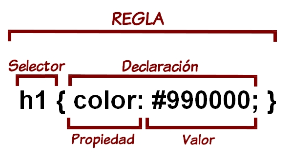
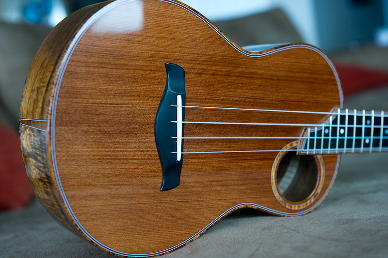

CSS - cascading style sheets
UNLaM | 2016
cascading style sheets?
Nomenclatura

Clases e id
¿Qué diferencias hay? ¿Cómo se usan?
La diferencia es que los selectores por identificador están pensados para que el elemento que seleccionas sea único (sólo le puedes poner un identificador dado a un elemento de la página, es decir, los identificadores deben ser únicos).
Sin embargo, las clases están pensadas para poder definir el mismo estilo a varios elementos de la página. Es decir, puedes asignar una misma clase a varios elementos de la página sin problemas.
Animaciones con CSS3
Documentación y ejemplos
Transformaciones en CSS3
Las transformaciones te permiten manipular visualmente elementos para rotarlos, torcerlos, escalarlos o transladarlos
Escalar:
Estirar:
Rotar:
Filtros de CSS3 para imágenes
- filter: grayscale(1)
- filter: saturate(8)
- filter: hue-rotate(90deg)
- filter: brightness(3)
- filter: contrast(4)
- filter: blur(5px)
